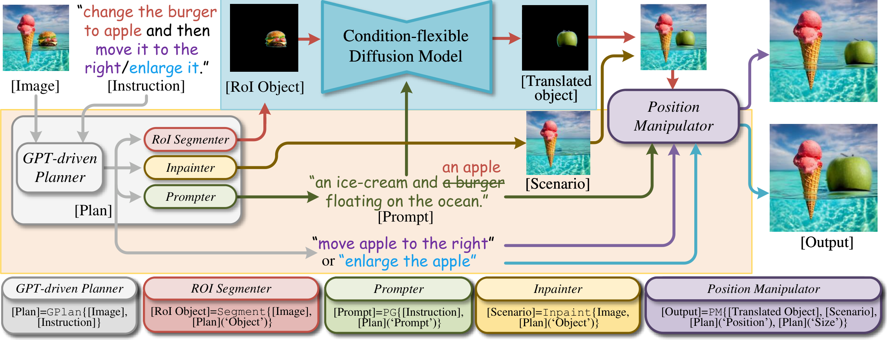
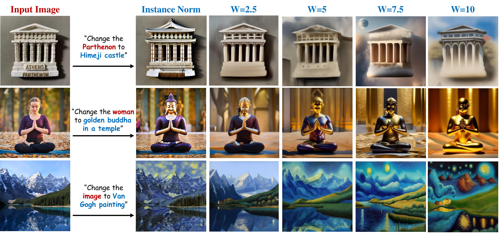
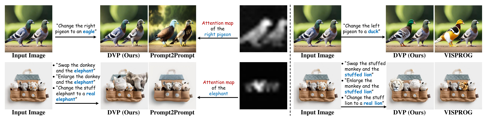
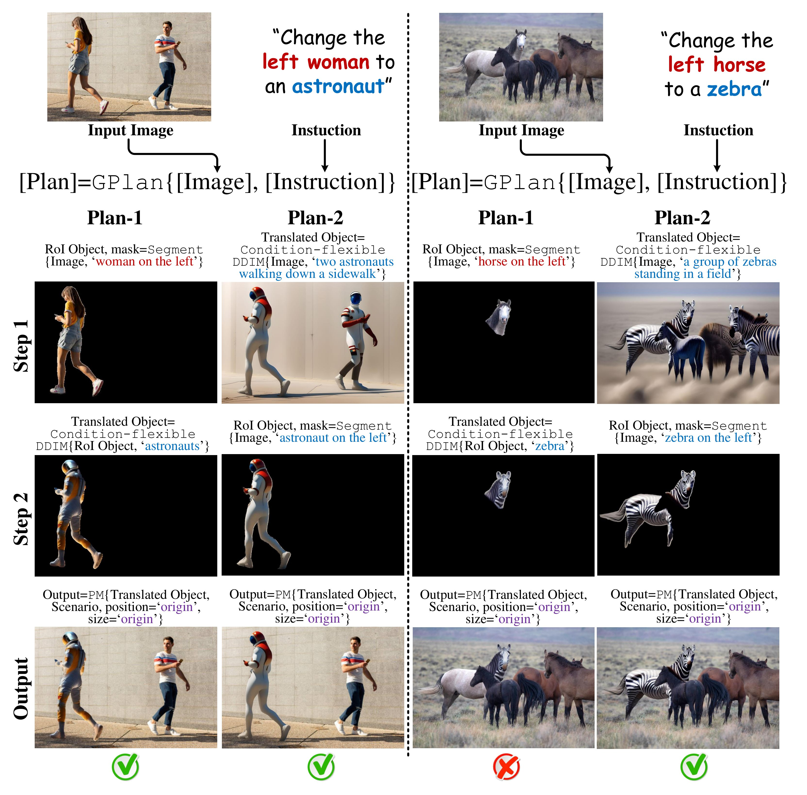
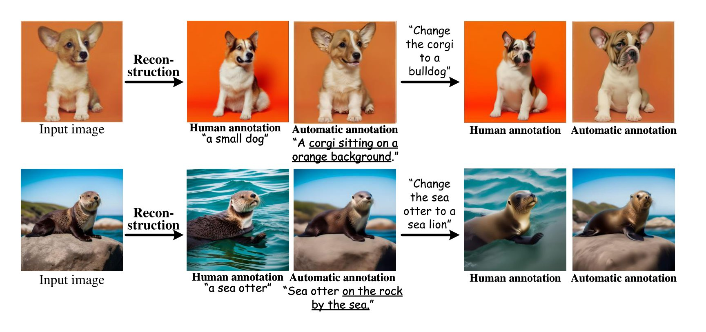

Abstract
We introduce the novel Diffusion Visual Programmer (DVP), a neuro-symbolic image translation framework. Our proposed DVP seamlessly embeds a condition-flexible diffusion model within the GPT architecture, orchestrating a coherent sequence of visual programs (i.e., computer vision models) for various pro-symbolic steps, which span RoI identification, style transfer, and position manipulation, facilitating transparent and controllable image translation processes. Extensive experiments demonstrate DVP's remarkable performance, surpassing concurrent arts. This success can be attributed to several key features of DVP: First, DVP achieves condition-flexible translation via instance normalization, enabling the model to eliminate sensitivity caused by the manual guidance and optimally focus on textual descriptions for high-quality content generation. Second, the framework enhances in-context reasoning by deciphering intricate high-dimensional concepts in feature spaces into more accessible low-dimensional symbols (e.g., [Prompt], [RoI object]), allowing for localized, context-free editing while main taining overall coherence. Last but not least, DVP improves systemic controllability and explainability by offering explicit symbolic representations at each programming stage, empowering users to intuitively interpret and modify results. Our research marks a substantial step towards harmonizing artificial image trans lation processes with cognitive intelligence, promising broader applications. The code is available at here.
Approach
Within our framework, image translation is decomposed into two distinct sub-objectives: 1. style transfer, translating RoIs within images while upholding contextual coherence; and 2. context-free editing, endowing the capacity for unrestricted yet judicious modifications.

In response to 1, Condition-flexible diffusion model is introduced for autonomous, non-human-intervened translation. To achieve 2, we present In-context Visual Programming, which decomposes high-level concepts into human-understandable symbols, enabling adaptable manipulation.
Instance Normalization
Our condition-flexible diffusion model diverges from conventional approaches. For fairness, these comparisons are made without incorporating in-context visual
programming into our approach.

In-context Reasoning
DVP
employs a set of visual programming operations for image
translation, thereby facilitating
a powerful in-context reasoning capability during image
manipulation. The cross-attention
map on Prompt2Prompt indicates that it recognizes both
pigeons, albeit with a notable
failure to discern the positional
information accurately.

Explainable Controllability
In design, we enable multiple operations worked in parallel, there are different
program plans available for a diverse order of operation sequences. Throughout the execution process, the program is run line-by-line, triggering the specified operation
and yielding human-interpretable intermediate outputs at each step, thereby facilitating systemic
explainability for error correction.

Label Efficiency
Prompter generates detailed image descriptions for arbitrary input images, thereby relaxing label dependency without being tightly bound by human annotations.

Conclusion
In this work, we introduce DVP, a neuro-symbolic framework for image translation. Compared to concurrent image translation approaches, DVP has merits in: i) generalized translation without considering hand-crafted guidance scales on condition-rigid learning; ii) simple yet powerful in-context reasoning via visual programming; iii) intuitive controllability and explainability by step-by-step program execution and parallel operations. As a whole, we conclude that the outcomes presented in our paper contribute foundational insights into both image translation and neuro-symbolic domains.
Social Impact
This work introduces DVP as a neuro-symbolic framework for image translation, showing robust image translation, strong in-context reasoning and straightforward controllability and explainability. On positive side, our framework reaches superior image translation performance qualitatively and quantitatively, and provide a user-centric design for the integration of future ad- vanced modules. DVP holds significant merit, particularly in applications pertinent to safety-critical domains and industrial deployments. For potential negative social impact, our DVP struggles in handling obscured objects and photometric conditions, which are common limitations of almost all concurrent diffusion models. Hence its utility should be further examined.